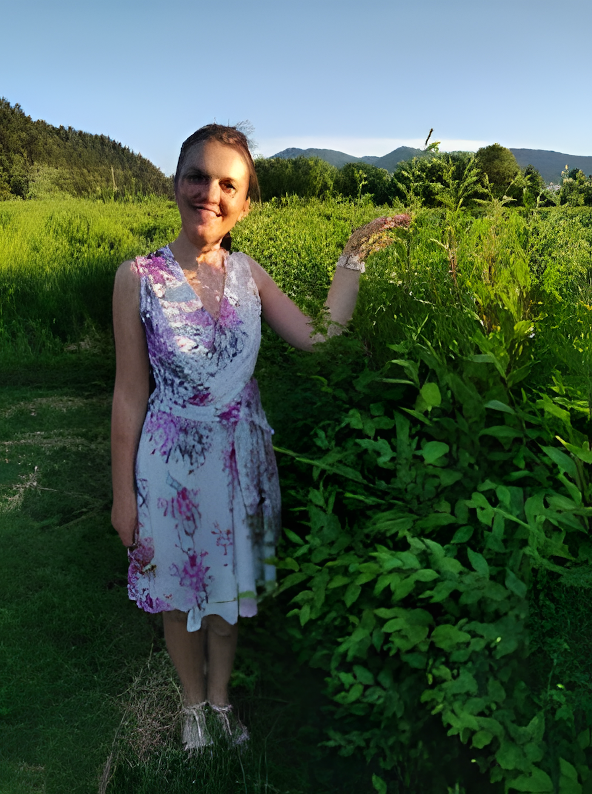

Galéria
Pohľad do zelene
Labyrint, záhrady a okolie Ľubovnianskeho hradu — kliknutím na fotografiu ju zväčšíte.


Objavte jedinečný živý labyrint v Starej Ľubovni.
Naplánovať návštevuCesta do stredu neexistuje na mape — existuje len v nohách tých, čo si ju nájdu sami.
Viktóriine záhrady s bludiskom Čertova skala vyrástli zo skromného, zarasteného pozemku a jedného sna mladého Ľubovňana, ktorého inšpiroval ľadový labyrint v poľskom Zakopanom. Príprava trvala tri roky a vyžiadala si vysadenie 20 000 sadeníc brestov — dnes tvoria uličky s rozlohou 6 400 m² v areáli s celkovou výlohou 11 000 m². Bludisko je rozdelené na deväť častí, každú stráži jeden z majstrov starej povesti o Čertovej skale, a cesta k vyhliadkovej veži v strede odmení tých najvytrvalejších najkrajším pohľadom na Ľubovniansky hrad.
Živé steny z 20 000 brestov na ploche 6 400 m².
Kreatívne úlohy a postavy z legendy pre malých dobrodruhov.
Súčasť výletov popod Ľubovniansky hrad a skanzen.
Vyrezávané lavičky pod lampami a lúka na piknik.

Labyrint, záhrady a okolie Ľubovnianskeho hradu — kliknutím na fotografiu ju zväčšíte.
Základné informácie pre váš výlet do Viktóriiných záhrad.
Jakubianka, Stará Ľubovňa, Prešovský kraj — pod Ľubovnianskym hradom.
Denne 10:00 – 20:00
(sezónne, mimo sezóny obmedzené)
Areál záhrad: zdarma
Bludisko — dospelí 11 € · deti/senior/ZŤP 8 € · rodinné (2+2) 30 €
Platené parkovisko Levočská 27A, Stará Ľubovňa.
+421 950 456 630
info@viktoriinezahrady.sk
Viktóriine záhrady sa nachádzajú v Starej Ľubovni, pod Ľubovnianskym hradom.
Miesto, kde sa stráca a zároveň nájde každý — bez ohľadu na vek.
Najväčšie bludisko svojho druhu v strednej Európe, vysadené z 20 000 brestov.
Chodníky lemované záhonmi kvetov a byliniek na 11-tisíc m².
Vyrezávané lavičky, lampy a lúka určená na piknik či koncerty.
Deväť majstrov, kreatívne úlohy a titul rytiera či dámy na konci cesty.
Máte otázku alebo chcete dohodnúť skupinovú návštevu? Napíšte nám.
Pre skupiny nad 15 osôb poskytujeme zľavu 25 % zo vstupného. Napíšte nám pre rezerváciu termínu alebo firemné a školské akcie.